The colour palette, based on split complementary harmony, was chosen to create visual balance and contrast, relating to the Yale School of Art's mission of blending tradition with creativity. The base colour, brown (#7F5539), symbolizes reliability and professionalism, fitting for an academic institution. The complementary colours, blue (#39557F) and green (#397F6B), offer contrast while maintaining harmony. Blue represents trust and intellect, used for the text, while green signifies creativity and growth, applied to the artistic symbols. This combination of warm and cool tones provides visual interest and reflects the institution’s emphasis on both stability and innovation in art.
Yale School of Art
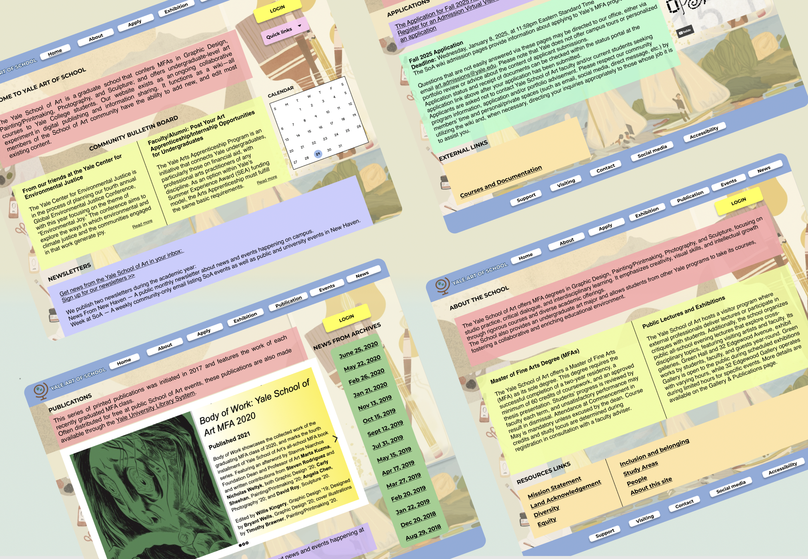OVERVIEW
At a glance, this website The Yale School of Art is a graduate school that confers MFAs in Graphic Design, Painting/Printmaking, Photography, and Sculpture; and offers undergraduate-level art courses to Yale College students. Categories and subcategories may not always be clearly organized, making it difficult to find specific listings. This confuses the user and they might be unsure where to start, proceed, or focus their attention. So, systematic methods were used like interviews, personas, and heuristic evaluation in order to learn more about their opinions, experiences, and recommendations for enhancements.
Focus Areas
Through this project, I deepened my understanding of user experience design and research. Leading user interviews helped me develop skills in gathering and analyzing user feedback, which I then applied to create more user-centered design solutions.
- UI design: Design system, typography, visual layouts
- UX strategy: Personas, flowcharts, task flows, navigation system, usability testings
- User research: User interviews, market research, stakeholder interviews.
Roles and responsibilities
This is my academic project and I worked on the scripts of logo designs, personas, sitemap, mood board and wireframing.
Design
I worked on the internal architecture of the application, wireframes, and both low & mid-fidelity prototypes.
Skills & Tools
- 🎨 Prototyping
- 💻 Figma
- 📝 Notion
- 🔍 User Research
- ✏️ Wireframing
- 🛠️ Justinmind
.png)
PROBLEM STATEMENT
The Yale School of Art website currently lacks an intuitive structure, making it challenging for users to navigate between programs, exhibitions, and resources. Key information about the school, events, and application processes is not easily accessible, which limits engagement from prospective students, alumni, and art enthusiasts.
"How can the Yale School of Art website be redesigned to create a more engaging, user-centered experience that highlights the school's programs, events, and community, while providing clear navigation and accessible information for a diverse audience?"
PERSONAS


SWOT ANALYSIS
This portfolio presents a concise SWOT analysis of university fine arts programs, highlighting strengths, weaknesses, opportunities, and threats. Using Yale's highly ranked program as an example, it identifies key factors affecting user experience, program reputation, and external challenges. The analysis also includes practical examples to show how strategic improvements can enhance engagement and program success.

KEYWORDS
My work on the Yale School of Art website redesign is rooted in a deep appreciation for creativity, education, and artistic excellence. This project embodies an exploration of innovative design that embraces diversity and showcases the vibrant artistic community. By integrating elements of aesthetics, craftsmanship, and visionary thinking, the redesign aims to create an engaging platform that celebrates cultural heritage and inclusivity. Through thoughtful design solutions, I strive to enhance user experience while maintaining the school’s legacy of talent, education, and the pursuit of excellence. The outcome is a digital space that fosters connection, learning, and artistic expression for all.
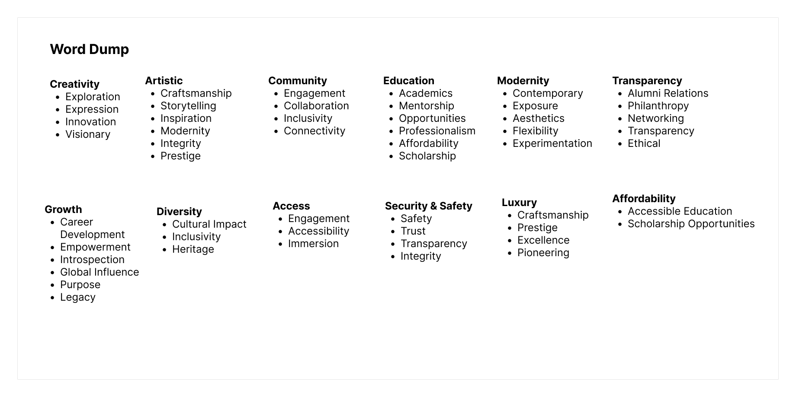
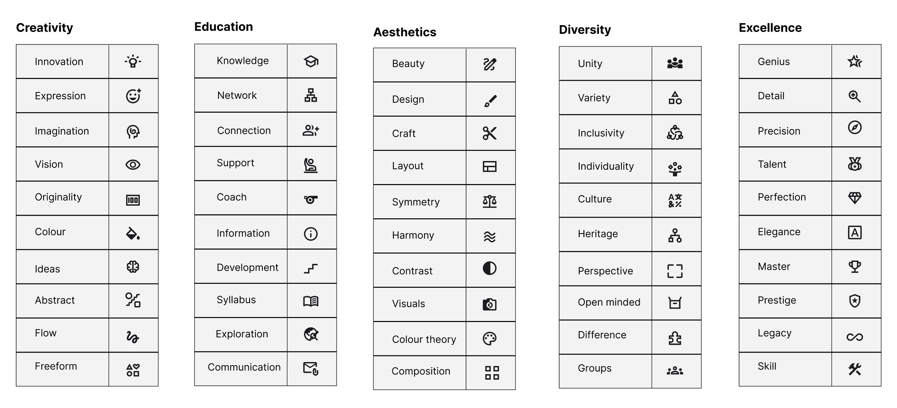
COLOUR HARMONY
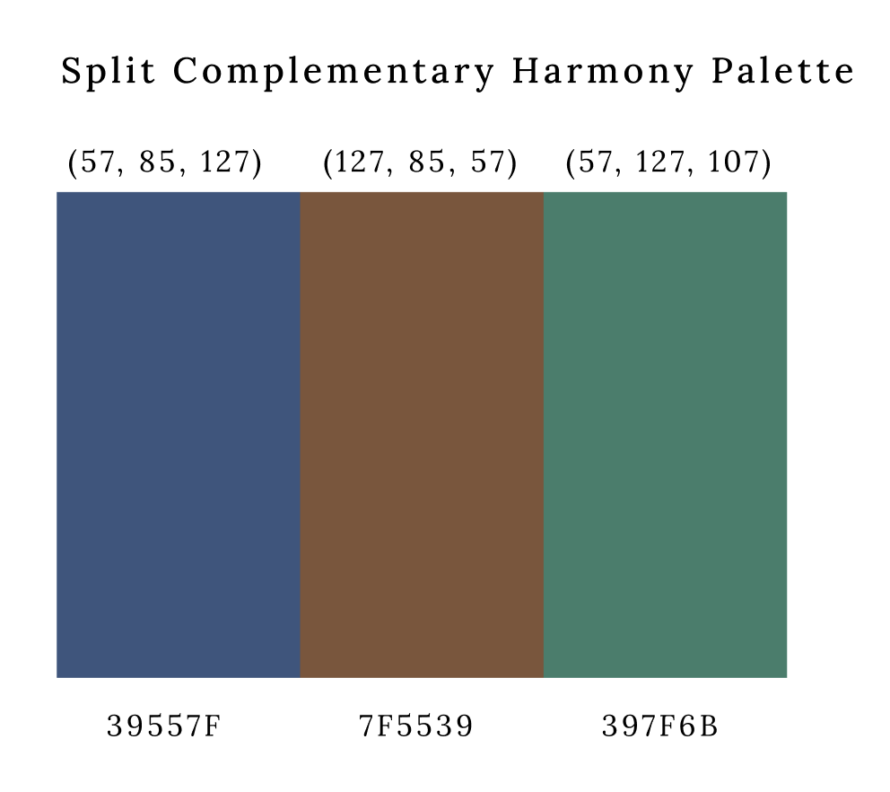
LOGO AND TAGLINE
Initially there was no logo and I added the globe as main element to make it more impactful. The globe's shape was also geometrically adjusted to give the design a more modern, structured feel. The palette was added and placed next to graduation cap were signified to mention the art education. By adjusting the thickness and simplifying elements, I ensured the design works well across various mediums. I chose a strong sans-serif font like Montserrat for the logotype because of its professional and modern appearance, which complements the educational theme. The Helvetica lighter-weight tagline, “Empowering through Knowledge” adds a softer tone while reinforcing the logo’s purpose.
MOODBOARD
The mood board above reflects the Yale School of Art's rich history of fostering creativity, collaboration, and professional growth within the arts. Each image was carefully selected to represent the core values and experiences associated with the institution.
I chose brown as my base color because it is the dominant shade in my mood board, symbolizing warmth, reliability, and groundedness, which aligns with the values of the Yale School of Art. Brown is often associated with tradition and stability, making it a fitting choice for an institution steeped in history.

TYPOGRAPHY USED
Typography plays a critical role in establishing the visual identity and usability of the redesigned Yale School of Art website. The redesign utilizes Montserrat and Helvetica for distinct purposes.
Montserrat is a modern, geometric sans-serif typeface inspired by urban typography in Buenos Aires. It is clean, versatile, and visually engaging, making it suitable for contemporary designs.
Helvetica is a neo-grotesque sans-serif typeface renowned for its timeless, neutral, and professional design. Its simplicity makes it one of the most widely used typefaces in design history.
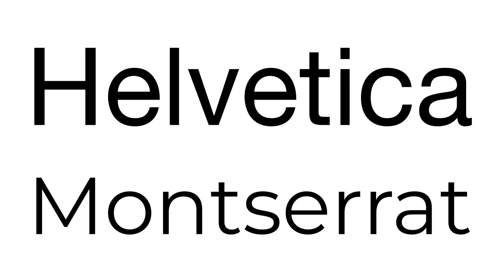
SITEMAP
The Yale School of Art website is designed to serve as a comprehensive and user-friendly platform that reflects the school's commitment to excellence, creativity, and inclusivity. This structured sitemap provides clear navigation across essential sections, including information about the school's mission, resources for current students and alumni, and detailed guidance for prospective applicants. Visitors can explore exhibitions, stay updated with news and events, access academic and public resources, and delve into the school's publications. The site emphasizes accessibility and engagement, ensuring a seamless experience for a diverse audience and fostering a deeper connection with the rich heritage and contemporary pursuits of the Yale School of Art.
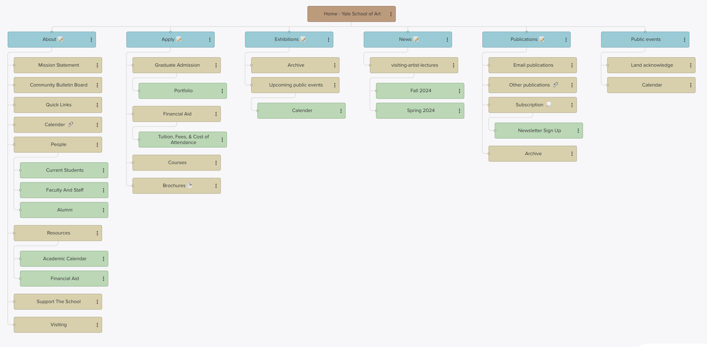
UX REWRITING
Rewrite Text 1
Before: "During exhibitions, Green Hall Gallery at 1156 Chapel Street is typically open to the public but due to COVID-19, it will remain open only to the Yale community until further notice."
After: "Green Hall Gallery at 1156 Chapel Street is open to the Yale community during exhibitions. Public access is currently restricted due to COVID-19. Updates will be provided as circumstances change."
Explanation: I rewrote this passage to enhance clarity and conciseness, aligning with the user-first focus. The original sentence felt unnecessarily wordy and buried important information. The improved version separates key details—who can access the gallery and why—making it easier for users to quickly grasp the message. Additionally, removing "until further notice" eliminates ambiguity. Clear, actionable updates convey a more transparent and user-focused approach, following UX writing guidelines on providing information usefully without overwhelming the reader.
Rewrite Text 2
Before: "For information on applications to the MFA program, please click the 'Graduate Admission' link below. The undergraduate admissions process is handled entirely through Yale College. Please refer all undergraduate admissions questions to the Yale College Undergraduate Admissions Office."
After: "Interested in our MFA program? Find application details under 'Graduate Admission' below. For undergraduate admissions, please contact the Yale College Undergraduate Admissions Office."
Explanation: This revision aims to enhance conciseness and clarity by removing redundancy and improving readability. The original text is too formal and verbose, which could be off-putting or confusing for users. The rephrased version is more direct and engaging, starting with an inviting tone that better aligns with the university's brand definition. It also separates the two types of admissions clearly, ensuring that users quickly find the relevant information.
BUSINESS CARD
The card provides his contact information, including his phone number, email address, and the school's website. The design features the Yale School of Art logo, which includes an image of a globe, alongside the school's name and tagline "Empowering through Knowledge". The overall design is clean and professional, using a color scheme of brown, navy, and white. The layout is well-structured, with the key information clearly organized and easy to read. The inclusion of the school's website address and Sai Rajesh Rapelli's role as the School Director suggests this is a formal business card used for official communication and networking. This card would be a suitable addition to a professional portfolio, as it demonstrates a well-designed and informative business card that effectively conveys the necessary details about the Yale School of Art and its leadership.
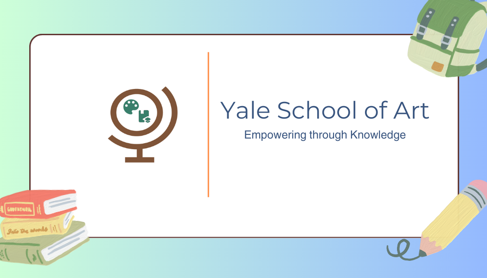
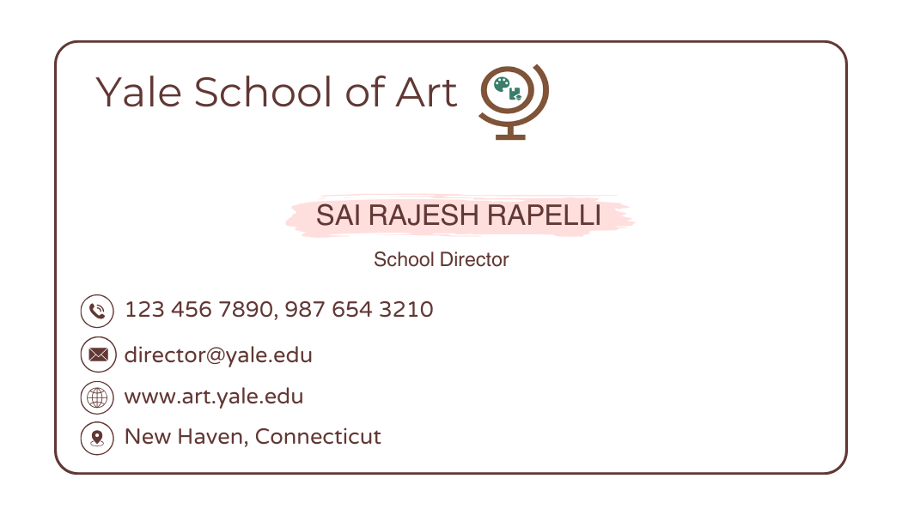
LOW-FI WIREFRAMING
For the redesign of the Home, About, and Apply screens, I focused on developing the experience specifically for a desktop site. Given that many students use this platform on a large scale, optimizing for desktop ensures a more user-friendly and efficient experience.
Grid Structure
Instead of the column grid, I chose a manuscript grid for this redesign. The manuscript grid offers a unified, streamlined layout ideal for content-heavy pages, allowing users to scroll through information with minimal distractions. Additionally, this grid structure provides enhanced responsiveness, improving adaptability across various screen sizes and creating a cohesive experience on different devices.
 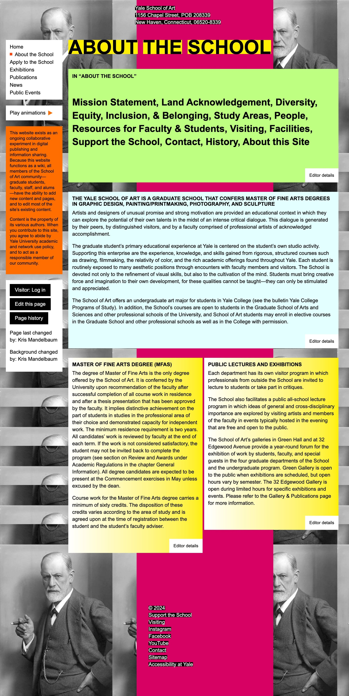
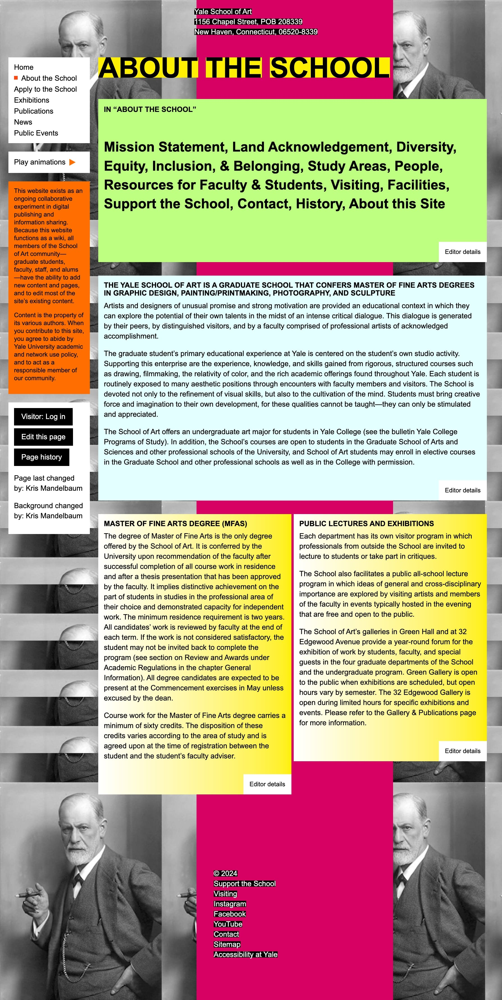

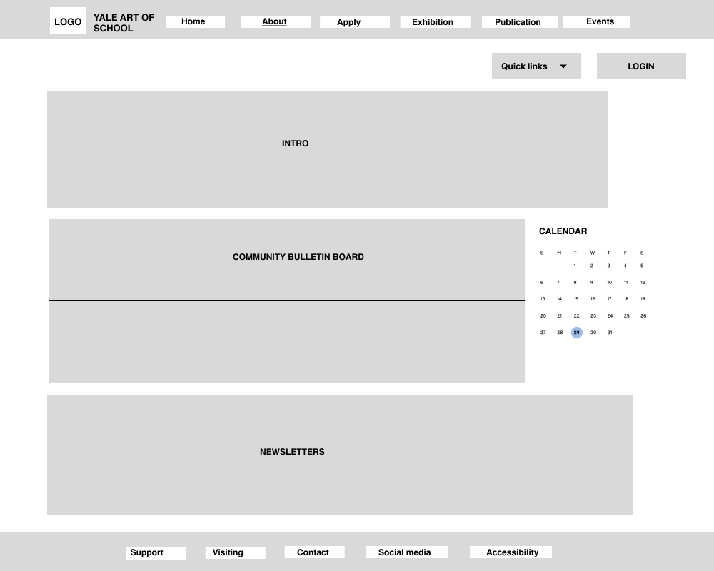
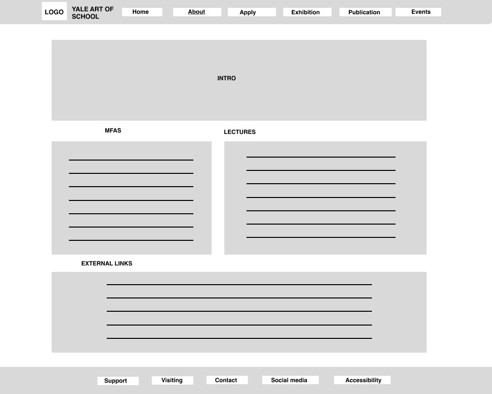
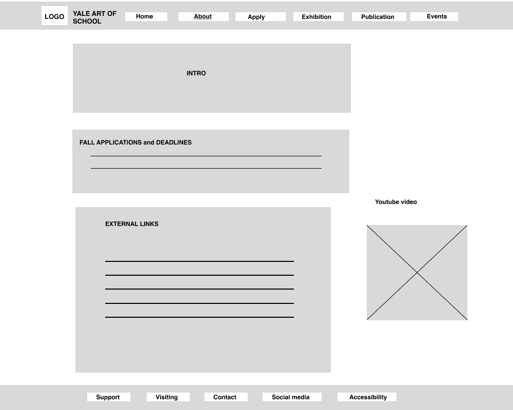
HIGH-FI WIREFRAMING
After designing the low-fidelity wireframes, I translated them into high-fidelity prototypes, ensuring a user-centered approach by incorporating the chosen color palette (#7F5539 and its complementary shades) and maintaining visual consistency throughout. The designs address user needs identified during research, with each screen tailored to specific personas. The homepage prioritizes an intuitive information hierarchy and streamlined navigation, while the user profile screen uses clean typography and card-based layouts for clarity. The search and filtering screen integrates dynamic filters and intuitive scrolling for ease of use. Feedback from usability testing of the low-fidelity designs informed improvements such as enhanced interaction feedback, clear affordances, and error validation. The high-fidelity prototypes are pixel-perfect and ready for development, adhering to responsive web design principles for seamless experiences across devices. Next, I plan to validate the designs through usability testing to refine them further and ensure they effectively meet user expectations.
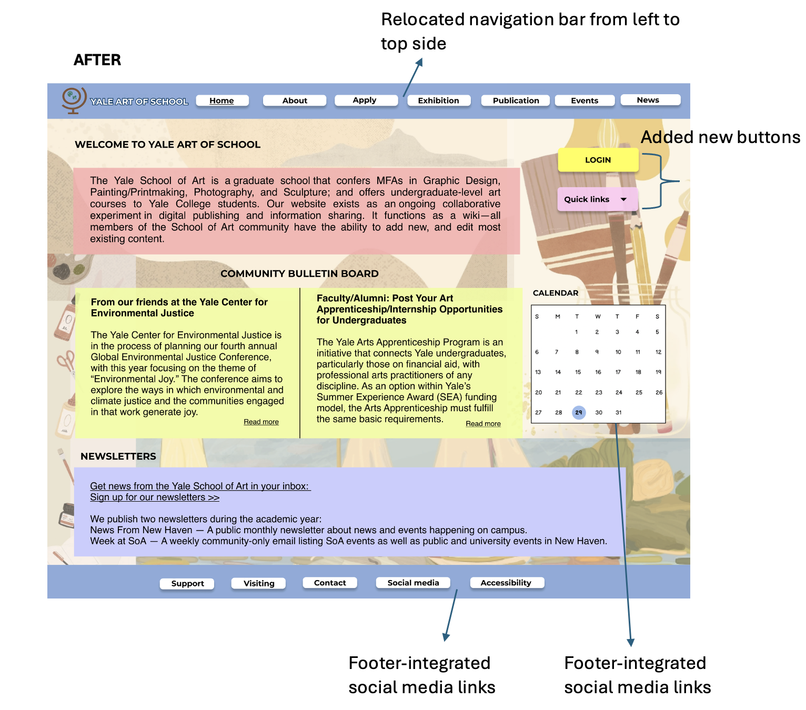
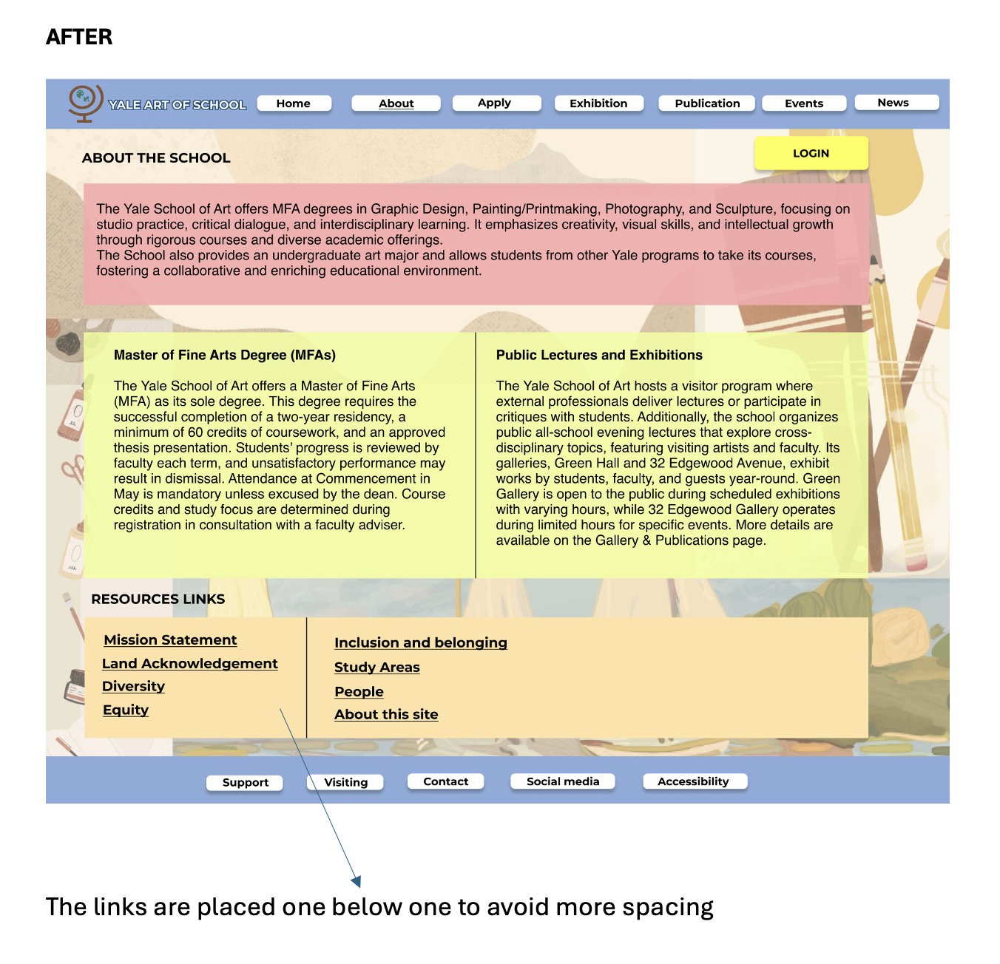
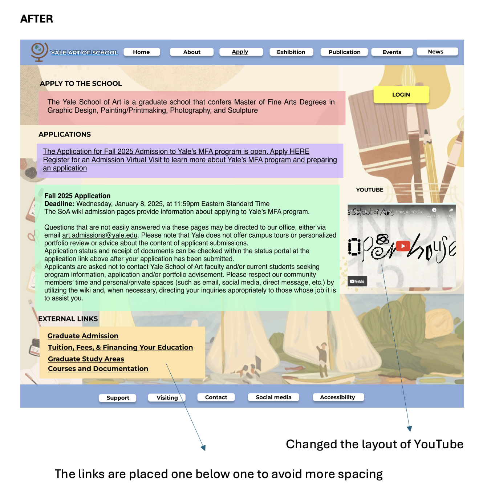
REFLECTIONS
Working on the Yale School of Art website redesign has been an enriching experience that enhanced my understanding of user-centered design principles. Through this project, I learned the importance of aligning design decisions with user research and stakeholder feedback to create intuitive and impactful digital experiences. The process of conducting interviews, crafting personas, and performing heuristic evaluations deepened my skills in identifying user pain points and translating them into actionable solutions.
Developing low- and high-fidelity prototypes allowed me to refine my approach to wireframing, grid structures, and color harmony, ensuring consistency and accessibility. I gained hands-on experience in usability testing, which emphasized the iterative nature of design and the value of feedback in driving improvements.
Overall, this project honed my ability to balance creativity with functionality, fostered a deeper appreciation for accessibility and inclusivity, and strengthened my skills in collaboration and problem-solving within the UI/UX domain.